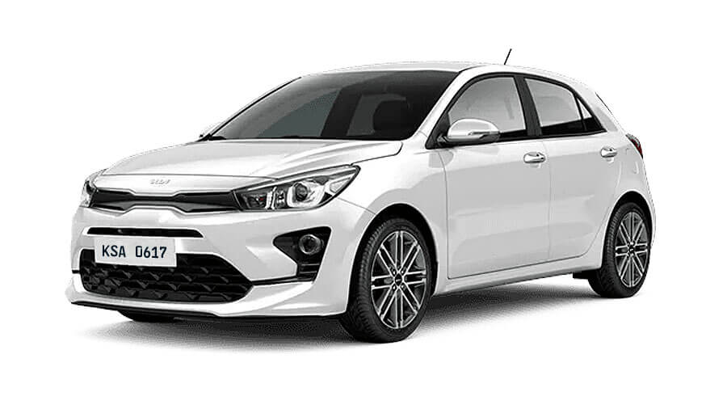

Auto mas economico
El Kia Picanto se organiza en 2 variantes diferentes con el motor de 3 cilindros de 1.0 litro, con 66 caballos de potencia y 95 Nm de torque, con caja manual de 5 velocidades o automática de 4.
Su rango de precios arranca en 52.2 millones de pesos, lo que le representó un aumento de 10.2 millones frente al listado hecho hace 6 meses y ello le llevó a perder la 'corona' como el carro más asequible.
La edición de entrada cuenta en su equipo con frenos de disco adelante, aire acondicionado manual, cámara de reserva y anclajes Isofix. Baúl de 255 litros.
¿Porque es el mas economico?
Lo mejor es que usa poca gasolina y sus repuestos son económicos
ahorro de combustibles, buen diseno
La Fuerza la velocidad que desarrolla y lo fácil de conducir que resulta
Tiene buena fuerza apesar de tres pistones
Imagen
Carro mas rapido
Bugatti Chiron, un lujoso auto deportivo capaz de alcanzar los 100 kilómetros por hora en tan solo 2.5 segundos. El carro, que se convertirá en el más rápido del país, rodará inicialmente por las calles de Medellín.
¿Porque es el mas rapido?
alcanza una velocidad de 490 kilómetros por hora.
Imagen
Carro mas malo
El Kia Rio es un vehículo urbano, del segmento B, fabricado por Kia desde 1997. Actualmente se comercializa la cuarta generación, presentada en 2017, que recibió un ligero lavado de cara a mediados de 2020 cuya principal novedad fue la incorporación de mecánicas micro híbridas
¿Porque es el mas malo?
posee un índice de mortalidad de 13 y el de siniestralidad es de 4.213
Imagen

Carro mas vendido en 2023
El toyota corolla cross es un vehiculo con las siguientes especificaciones las cuales lo hacen el mas vendido del mercado en este 2023, COMBUSTIBLE, Gasolina Extra (Octano 91 o más) ; POTENCIA (Hp/rpm), 97 / 5.200 ; TORQUE (Nm/rpm), 142 / 3.600 ; TECNOLOGÍA MOTOR, 4 CILINDROS EN LÍNEA + 16 VÁLVULAS
¿Porque es el mas vendido?
Las ventas de carros nuevos en Colombia mantienen su tendencia a la baja, preocupando cada vez más al sector automotor nacional. El primer reporte, emitido hoy por ANDI-Fenalco, habla de 22.411 unidades matriculadas en mayo de 2023, que representan un descenso del 30,1% frente a lo registrado un año antes. Así, el acumulado va en 76.271 unidades y una caída del 24,1%.
Imagen